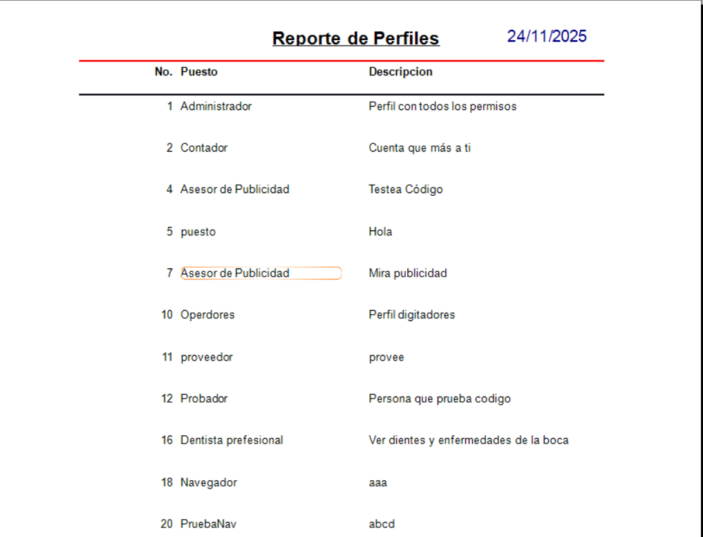

Este es un formulario creado con navegador. Este funciona para crear formularios dinamicos con tablas maestras.

Se selecciona el boton de registro y se ingresan los datos segun la tabla.

Despues de ingresar los datos se pulsa Guardar y debe aparecer un mensaje que dice Datos ingresado correctamente.

Para modificar o eliminar se selecciona un dato en el DataGridView y se pulsa Modificar o Eliminar segun lo indique el usuario.

El boton Imprimir abre un reporte de Crystal Report.
